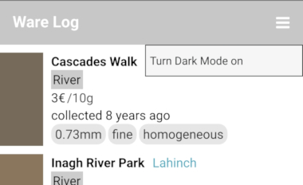
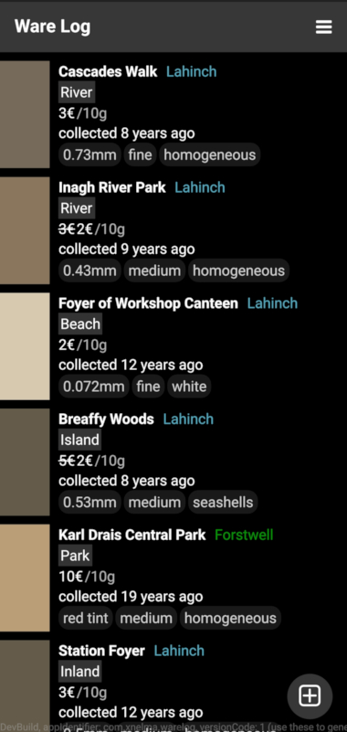
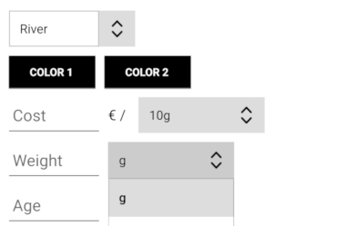
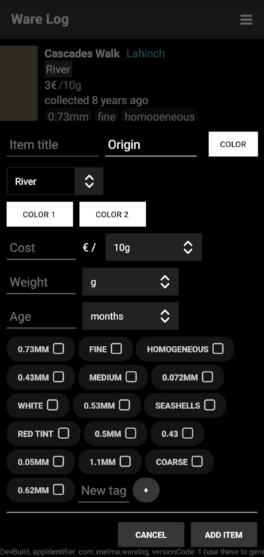

To enable switching to a dark theme, we will add a menu and menu item, save the state to settings and set dark mode colors.
First, add a menu icon to the app bar. AppPage by Felgo has the property rightBarIcon and can be used with an IconButtonBarItem, so let's add that.
AppPage {
...
title: qsTr("Ware Log")
rightBarItem: IconButtonBarItem {
iconType: IconType.bars
}
...
}
Then add the Menu component with a MenuItem for toggling the dark mode setting. These components require the QtQuick.Controls import.
rightBarItem: IconButtonBarItem {
...
onClicked: menu.open()
Menu {
id: menu
y: parent.height
MenuItem {
text: qsTr("Turn Dark Mode %1")
.arg(darkModeEnabled ? qsTr("off") : qsTr("on"))
onClicked: darkModeEnabled = !darkModeEnabled
}
}
}
Add the darkModeEnabled property above onInitTheme:
App {
property bool darkModeEnabled: false
onInitTheme: {
...
}

Now the menu item should switch between 'on' and 'off', but the state is not saved when closing the app.
So add a Settings component (requires the QtCore import) and bind it to the property:
App {
property bool darkModeEnabled: settings.darkModeEnabled
onInitTheme: ...
Settings {
id: settings
property bool darkModeEnabled: false
}
NavigationStack {
AppPage {
id: root
title: qsTr("Ware Log")
rightBarItem: IconButtonBarItem {
...
Menu {
...
MenuItem {
text: qsTr("Turn Dark Mode %1")
.arg(darkModeEnabled ? qsTr("off") : qsTr("on"))
onClicked: settings.darkModeEnabled
= !settings.darkModeEnabled
}
}
}
...
}
We will use property bindings for switching between colors. Add properties above onInitTheme that have bindings to colors depending on darkModeEnabled and create bindings in onInitTheme to them. Now, apart from the tint and button color, we also need to define a background and text color for light and dark mode.
property string tintColor: darkModeEnabled? "#373737" : "#c7c7c7" property string buttonColor: darkModeEnabled? "#373737" : "#a3a3a3" property string backgroundColor: darkModeEnabled? "black" : "white" property string textColor: darkModeEnabled? "white" : "black" onInitTheme: { Theme.colors.tintColor = Qt.binding(function() { return tintColor; }); Theme.colors.backgroundColor = Qt.binding(function() { return backgroundColor; }); Theme.colors.textColor = Qt.binding(function() { return textColor; }); Theme.appButton.backgroundColor = Qt.binding(function() { return buttonColor; }); Theme.navigationBar.shadowHeight = 0 }
Toggling light and dark mode should now change colors to dark or light respectively.

In the item edit view, the tag base color (the text color of TagButton) and the default color properties are hardcoded.
For the TagButton, set the text color to root.textColor. If not done already, set root as id of the App component in Main.qml. This should be enough to toggle colors between dark and light mode for the tag button list.
For the default color, create properties for it and for the ColorButton text color, and use them instead of the hardcoded values.
property string colorButtonTextColor: darkModeEnabled? "black" : "white" property string defaultColor: darkModeEnabled? "white" : "black"
and in EditItemView.qml:
property string originColor: defaultColor ... property string primaryColor: defaultColor property string secondaryColor: defaultColor ... component ColorButton : AppButton { ... textColor: colorButtonTextColor ... }
Also assign bindings for the default color in the reset method:
function reset() {
...
rowTitle.originColor = Qt.binding(function() { return defaultColor });
...
rowColors.primaryColor = Qt.binding(function() { return defaultColor });
rowColors.secondaryColor = Qt.binding(function() { return defaultColor });
...
}
The ComboBox components have no direct color properties, but can be changed via their palette.
Add a component LightDarkComboBox with ComboBox as base type and set the colors with bindings to color properties. This is trial and error and results in following properties:
component LightDarkComboBox : ComboBox {
palette {
text: textColor
base: editable? backgroundColor: lightColor
highlight: lightColor
button: lightColor
mid: mediumColor
dark: textColor
buttonText: textColor
highlightedText: textColor
window: backgroundColor
midlight: lightColor
light: lighterColor
}
}
This requires three more colors, lightColor, lighterColor, mediumColor, which would match the default combobox colors for light mode, and are set to corresponding dark colors for dark mode. While it would be convenient to use argb colors, with opacity values derived from light mode and then also used for dark mode, it does not work for ComboBox: parts of it would overlap and the borders would not look as clean:

In comparison without alpha channel:
I picked following colors:
property string lightColor: darkModeEnabled? "#222222" : "#dddddd" property string lighterColor: darkModeEnabled? "#191919" : "#f6f6f6" property string mediumColor: darkModeEnabled? "#444444" : "#bdbdbd"
Now the item edit view is also shown correctly in dark mode.
